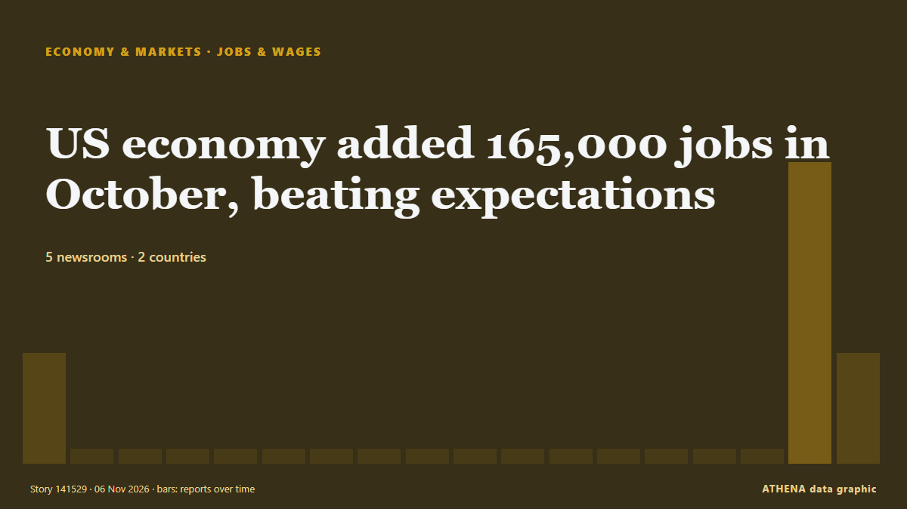

Empleo y salarios
PatrocinadoPresentado por  Cybernetics and Artificial Intelligence Lab Welcome to the Cybernetics and Artificial Intelligence Laboratory, established at the Department of Business Administration of the National and Kapodistrian University of Athens. The lab is headed by Professor Dimitrios Thomakos. The lab aims to do research that can be published in top venues. Our research uses tools and methods of Artificial Intelligence, and lies in the following areas: - Forecasting - Decision making - Cyber security - Finance We are always looking forward to collaborating with exceptional students!
Cybernetics and Artificial Intelligence Lab Welcome to the Cybernetics and Artificial Intelligence Laboratory, established at the Department of Business Administration of the National and Kapodistrian University of Athens. The lab is headed by Professor Dimitrios Thomakos. The lab aims to do research that can be published in top venues. Our research uses tools and methods of Artificial Intelligence, and lies in the following areas: - Forecasting - Decision making - Cyber security - Finance We are always looking forward to collaborating with exceptional students!
| 24 oct | 0 |
|---|---|
| 25 oct | 0 |
| 26 oct | 0 |
| 27 oct | 0 |
| 28 oct | 0 |
| 29 oct | 0 |
| 30 oct | 2 |
| 31 oct | 0 |
| 1 nov | 0 |
| 2 nov | 0 |
| 3 nov | 3 |
| 4 nov | 3 |
| 5 nov | 2 |
| 6 nov | 2 |
Los titulares se muestran en inglés, tal como se publicaron.

US economy added 165,000 jobs in October, beating expectations
The U.S. economy added 165,000 jobs in October, according to new data from the Bureau of Labor Statistics (BLS). de The Hill
Bangladesh Agrees to Raise Minimum Wage for Garment Workers After Protests
Hundreds of garment factories were shut down this week as workers in the country, the world’s second-largest exporter of clothing, demonstrated for higher pay. de New York Times Business
Disney plans thousands of layoffs as managers asked to cut costs by 20%
California: Walt Disney is considering cutting thousands of jobs as the entertainment giant seeks to reduce costs, with some managers asked to identify annual savings of 20 per cent, Bloomberg… de Gulf News
Private companies added 86,000 jobs in October, slightly higher than expected, ADP says
Private-sector job growth held steady in October, with gains spread across sectors. de CNBC Economy
Finland's unemployment rate remains worst in EU
The 11 percent rate of unemployment in Finland during September was nearly double the EU average of 6.2 percent. de Yle News (alternative feed)
Uber pays its drivers ‘wages’ and is liable for $81m payroll tax bill, Australia’s high court rules
Rideshare company unsuccessfully argued it didn’t employ workers and claimed money paid was not wages under NSW law The rideshare behemoth Uber has suffered a bruising loss in Australia’s high court… de The Guardian